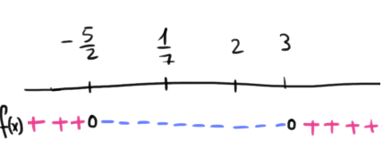
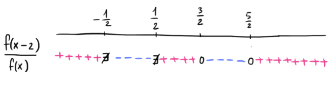

Compiti per casa
Esercizio 1
Consideriamo la funzione
\[
f(x) =
\begin{cases}
-2x - 5 \qquad &\text{se} \,\,\, x \leq 2
\\\\
7x^2 - 22x + 3 &\text{se} \,\,\, x \gt 2
\end{cases}
\]
Studiare il segno di \(f(x)\) al variare del valore di \(x\).
Soluzione:
Il segno della funzione è rappresentato nel seguente grafico

Esercizio 2
Consideriamo la funzione
\[
f(x) = 4x^2 - 1
\]
Studiare il segno di \(\dfrac{f(x - 2)}{f(x)}\)
Soluzione:
Il segno di \(\dfrac{f(x - 2)}{f(x)}\) è rappresentato nel seguente grafico
